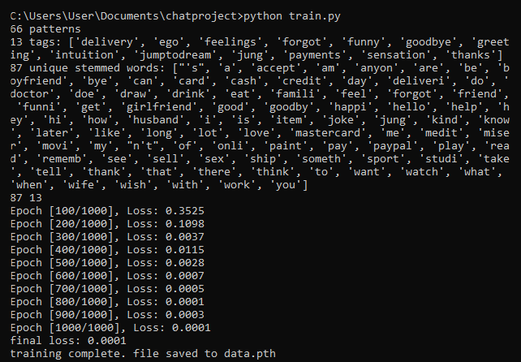

I've been interested in analytical psychology for a long time and after reading a short introduction on the topic I've decided to see if I could conceive some real world application using the main principles involved. The chatbot idea started really as sort of a joke, much in the same way ELIZA must have been conceived, but I quickly started seeing that it had a lot of potential.
I've read volumes 05 (Symbols of Transformation), 09 (Archetypes and the Collective Unconscious) and 16 (Practice of Pyschotherapy) of the collected works of C. G. Jung, which served as the basis to program the way the chatbot reacts. My approach has been mainly to encourage transcendence. In the jungian sense this means making the unconscious content of the mind conscious, and how it is achieved exactly can vary depending on the personality of the person in question. Jung believed however that in essence it followed the laws of enantiodoromia (enantios – opposite and δρόμος and dromos – running course), meaning that equilibrium can only be achieved when an opposite force, in this case the unconscious mind, balances out any extreme in one individual's life. Jung firmly believed in the transformative power of this idea as a means to catharsis.

When the user displays signs of intuition, sensation is encouraged and and when he displays a preference for sensation, intutition is encouraged. This can easily be done via tags and keywords. One simply needs to create an intents.json file containing user intents that are relevant for the conversation and to which the NLTK functions will be applied during training. The neural net itself used for deep learning is defined within the models.py file and the main loop used for training is contained in lines 95-115 of the train.py file. This is a feed-forward neural net trained for 1000 epochs and with a learning rate of 0.001. This code was built by following Python Engineer's tutorial on chatbots on Youtube with additional modifications to GUI design and definition of intents. Concerning the matter of archetypical figures, the AI is merely suggestive. this is in line with the principles of psychotherapy described earlier of making the unconscious conscious without forcing anything or deriving an interpreation on the spot. Attempts to create the link between dream description and archetypical figures without much interpretation are tentative at best and the goal is that the user is able for himself to deduct the archetypical figures within his dream and reflect upon their meaning.

There is a further aspect of my approach which is that of repetition. I believe any serious question that is answered half-jokingly should be asked again by the psychoterapist. And perhaps asked again until exhaustion as to extract the core and most truthful response. Think of the child who repeatedly asks why over and over again and how the ladder leads further and further down the hole. I believe this point applies here as well.
It's still a very simple chatbot, but then again so was ELIZA. You can find the repository here and download the executable file directly here.